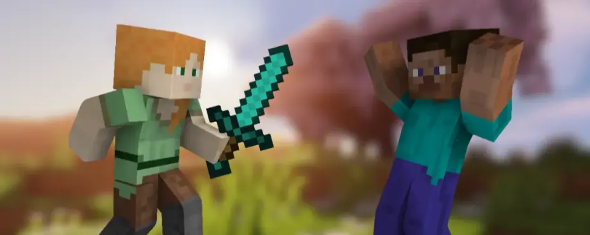
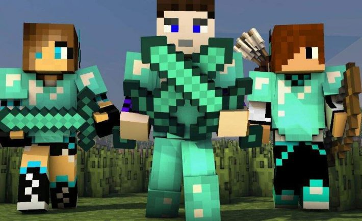
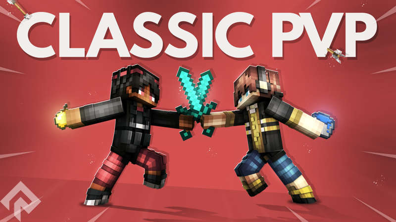
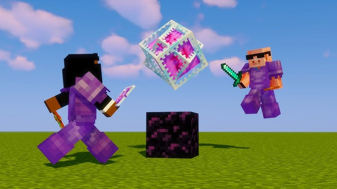
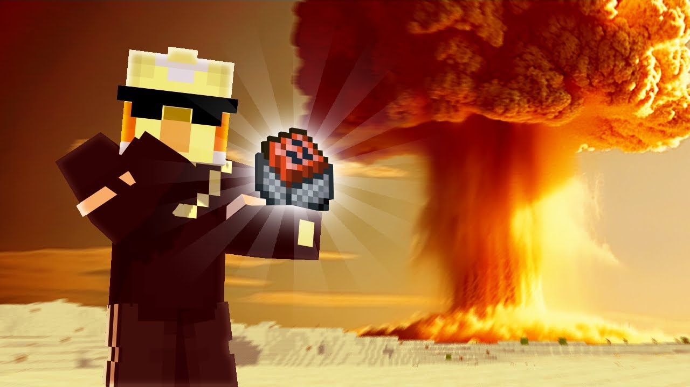
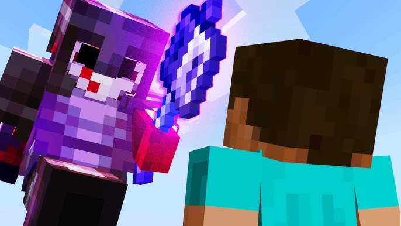
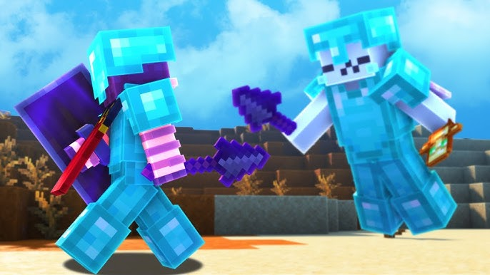

PvP žaidėjai!!!
PvP žaidėjai Minecrafte yra tie, kurie daugiausia dėmesio skiria kovai su kitais žaidėjais (Player vs Player). Jiems svarbiausia yra reakcija, tikslumas ir strategija. Skirtingai nei statytojai ar redstoneriai, PvP žaidėjai nuolat treniruojasi, kad pagerintų savo kovos įgūdžius – nuo taikymo lanku iki kovos su kardu ar kitais ginklais. Yra keli PvP metodai apie kuriuo toliau kalbėsime.

Klasikinis PvP
Tai yra paprasta kova tarp žaidėjų. Šis metodas taip pat turi skilčių, pagal kurias yra naudojami skirtingi daiktai, kaip pavyzdžiui šarvai ir kardas, šarvai ir kirvis (prie to dažniausiai prisideda ir skydas, lankas ir arbaletas, bet aš neminėsiu tokių antraeilių daiktų), ar net visiškai pilnai ištobulinti šarvai bei įrankiai su daugybe maisto ir eliksyrų.


Crystal PvP
Tai vienas labiausiai atskirtų nuo paprasto žaidimo PvP metodų. Galima „Minecraft“ žaisti daug metų, bet pabandžius šitą PvP metodą visiškai nieko nesugebėti. Čia dažniausiai naudojami geriausi šarvai bei įrankiai su obsidianu ir ant jo padedamais kristalais. Šis metodas veikia, nes tuos kristalus susprogdus yra padaroma didžiulė žala žaidėjo apatinei daliai, todėl jei moki saugoti savo kojas ir sprogdinti kitų, tai tau šis metodas patiks. Taip pat čia yra naudojama daug totemų, nes jie tau išgelbsti gyvybę, jei žaidi neatsargiai.

Cart PvP
Šis metodas yra gan panašus į praeitą, bent jau tuo, jog čia taip pat bandoma susprogdinti savo priešų kojas. Tik šį kartą nebe su kristalais, o su vagonėliuose esančiomis bombomis. Suprantama, užtrunka nemažai laiko, kol gali staigiai padėti bėgius, vagonėlį su bomba ir tada pašauti jį su degančia strėle, tačiau gerai pramokus tai daryti, išeina tikrai greitai sudoroti savo priešus.

Mace PvP
Tai yra dar gana naujas PvP metodas, naudojantis naujai pridėtą ginklą – meisą. Tai ginklas, su kuriuo darai vis daugiau ir daugiau žalos krisdamas iš aukščiau ir aukščiau, tačiau, suprantama, žaidėjai atrado būdų, kaip su elytra galima skristi aukštyn, apsisukti, visu greičiu skristi žemyn, tada nusiimti elytrą, trenkti varžovui su „Wind Burst“ užkerėjimu, kuris išmeta tave atgal aukštyn. Tada tu skrendi žemyn, trenki ir taip toliau, ir taip toliau.

Spear PvP
Tai yra dar tikrai naujas PvP metodas, kuris panašus į Mace PvP dėl to, jog čia taip pat naudojama elytra. Su ja reikia skristi panašiai, tačiau kadangi naudojama ietis, nereikia kristi iš aukštai – reikia tik greičio, kurį tau suteikia elytra. Taigi, nors šis metodas dar tik vystosi, geriausiems jo žaidėjams pavyksta kovoti išties įspūdingai.

Geriausi Minecraft PvP žaidėjai
Štai tos legendos kurios nenueina nuo kompiuterio (Daugiau žaidėjų rasite McTiers Puslapyje):